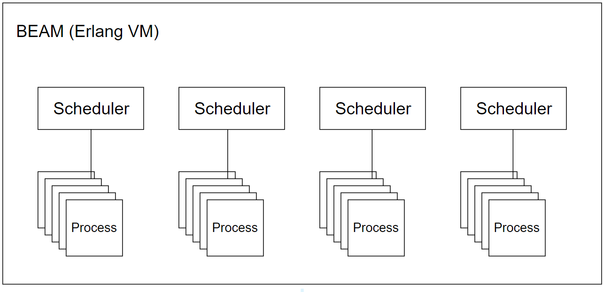

<h2>Erlang VM</h2>



<aside class="notes">
    <ul>
        <li>Nur ein OS Prozess</li>
        <li>1 Scheduler pro Core</li>
		<li>Prozesse unabhängig voneinander</li>
		<li>Erlang Process: Sequentielle Verarbeitung, Garbage Collection auf Prozessebene, leichtgewichtig (Mikrosekunden zum Starten und ca. 2 KB Speicherverbrauch)</li>
    </ul>
</aside>